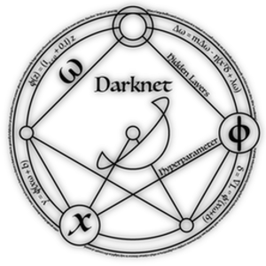

You Only Look Once
YOLO
1. Instrucion
"You only look once (YOLO) is a state-of-the-art, real-time object detection system. On a Titan X it processes images at 40-90 FPS and has a mAP on VOC 2007 of 78.6% and a mAP of 48.1% on COCO test-dev." - YOLO website
2. How It Works
a. Neural Network
YOLO主要由CNN、DNN、和Maxpooling等類神經網路所組成。如下圖所示。
b. Recognition
一張圖片讀入後，會被劃分成7個區塊。接著會做bouding boxes、confidence的偵測以及每一個區域代表的物體的分類。Bouding boxes代表偵測到物體的位置，一個黑框代表一個物體被偵測到，而confidence代表黑框真的包含一個物體的可能性。透過Bouding boxes搭配各個區域的物體分類，便可成功辨識出圖片中所含的物體及其位置。

(Picture from YOLO website. )
c. Darknet
YOLO的作者還開發了Darknet，一套機器學習框架，可在其中找到已經建構好的YOLO網路，並可於YOLO官網下載訓練好的模型。詳細可參考Darknet。
(Picture from Darknet website. )
3. Speed Up
NNPACK
YOLO的設計在擁有GPU的運算平台上有快速且優異的表現，然而在Rpi3上，受限於硬體限制，正常辨識一張圖片花費時間長達38秒。因此在這裡使用了NNPACK做搭配。NNPACK是由Facebook開發，專門用來加速神經網路運算的專案，能夠在多核CPU上提高計算效率。詳細可參考NNPACK。為了在原本的Darkne中加入NNPACK，參考並使用了shizukachan的專案，並且針對Rpi的硬體架構做了一些優化，詳細建構方式可參考Readme。
(Picture from NNPACK. )
4. Recognition Time
比較建構時，Makefile中的各種不同選項對效能影響，辨識時間如下。
| Build Options | Recognition time |
| NNPACK=0, ARM_NEON=0, NNPACK_FAST=0, -mcpu=native | 38s |
| NNPACK=1, ARM_NEON=0, NNPACK_FAST=0, -mcpu=native | 3.1s |
| NNPACK=1, ARM_NEON=1, NNPACK_FAST=1, -mcpu=native | 2.3s |
| NNPACK=1, ARM_NEON=1, NNPACK_FAST=1, -mcpu=cortex-a53 | 1.6s |